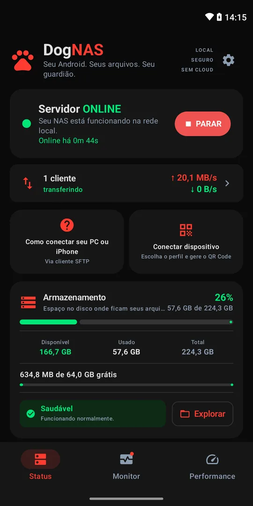
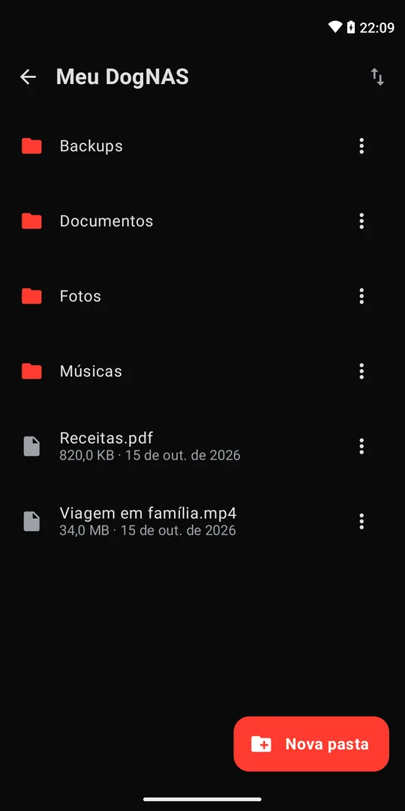

Estou começando
Do zero ao primeiro emprego em tecnologia
Um plano de ação, preparo para entrevistas e as bases para os primeiros anos de carreira.
- Plano de AçãoSmartBook
- Dominando EntrevistasSmartBook
- Pessoa Engenheira de Software JReBook Kindle
Carreira · Engenharia · Liderança
Paulo Leite — engenheiro de software com 20+ anos de experiência. Ajudo profissionais de tecnologia a crescer, do primeiro emprego à liderança.
Sua trilha
Escolha o ponto de partida. Cada trilha reúne o material certo para a sua etapa.
Estou começando
Um plano de ação, preparo para entrevistas e as bases para os primeiros anos de carreira.
Quero crescer
O que separa um nível do outro, a disciplina para evoluir e a arquitetura por trás de sistemas que escalam.
Quero liderar
Como liderar pessoas sem deixar de ser engenheiro: conteúdo no Instagram e mentorias 1:1 gratuitas.
Sobre
Comecei em tecnologia aos 15 anos e me profissionalizei aos 18. Desde então fui desenvolvedor, tech lead, Staff Engineer e hoje lidero times de engenharia.
Dei aulas de graduação e pós-graduação por mais de 10 anos, escrevi livros para quem quer evoluir na carreira e construo meus próprios produtos, como o DogNAS.
Corro maratonas (São Paulo, Nova York, Chicago): a disciplina que levo da pista para o código e para a liderança.
Liderança
“Tive a oportunidade de trabalhar com Paulo [em uma fintech]. Um profissional extremamente qualificado e comprometido. Um líder nato, sempre trazendo a responsabilidade para si, engajando a equipe para resolver os problemas de forma disruptiva. Paulo é uma pessoa com nível técnico muito elevado. Sempre pensando em soluções simples para problemas complexos como concorrência, disponibilidade, performance e resiliência. Grande profissional”
“Paulo é um dos melhores especialistas de tecnologia com quem tive a oportunidade de trabalhar. Ele sabe equilibrar uma boa abordagem técnica, com boas práticas de arquitetura, e uma solução precisa para as necessidades do negócio. Além disso, é um líder nato, ajudando o time a ampliar seu conhecimento e mantendo um bom ambiente de trabalho.”
“Paulo é um ótimo líder técnico. Está sempre estudando as melhores tecnologias e trabalha com foco em melhorar a qualidade dos times em que atua. Se você procura um ótimo líder técnico, eu recomendo!”
“O Paulo Roberto é um profissional diferenciado. Uma pessoa que promove melhorias, apoia nas mudanças e acompanha os resultados. Um especialista que cumpre com excelência seu papel técnico dentro dos times que atua e inspira seus colegas de trabalho, sendo muitas vezes uma referência. Tem o grande diferencial de elevar o nível técnico das pessoas ao redor.”
Recomendações públicas no LinkedIn (abre em nova aba).
Mentorados
“Minha conversa com o Paulo foi muito boa e muito esclarecedora. Me gerou muitos insights e me fez refletir bastante sobre alguns pontos da minha carreira.”
“De forma clara e bem detalhada, o Paulo me ajudou a mapear os principais problemas que eu enfrento na minha organização e me deu um direcionamento para melhorar as minhas habilidades em desenvolvimento e gestão de TI. Ele demonstrou ter um conhecimento profundo da área de tecnologia, me passou vários insights e me indicou recursos de aprendizado. A mentoria foi muito proveitosa, recomendo!”
“A sessão de mentoria que tive com o Paulo foi incrível. Deu pra ver claramente que ele dedica tempo pra se preparar pro encontro, o que combinado com o conhecimento e vivência dele tornam a experiência excelente. Ele também produziu um material pra guiar a sessão e possíveis encontros posteriores, algo que eu não havia visto ainda aqui no ADP List. Definitivamente um mentor ótimo e que faz um trabalho muito bom aqui, é até difícil de acreditar que ele não cobra.”
“Paulo está sempre inspirado a ajudar as pessoas a alcançarem seus objetivos. Tive a bênção de conhecê-lo há muitos anos e fico muito feliz de tê-lo como mentor para conquistar alguns objetivos de carreira. Muito obrigado, Paulo.”
Avaliações públicas no perfil do ADPList (abre em nova aba).
Mentoria
Sessões de 45 minutos sobre carreira, engenharia e liderança. Gratuitas, sujeitas à disponibilidade de agenda.
Projetos


Transforme um celular, tablet ou TV box Android em armazenamento particular pelo Wi-Fi. Sem nuvem, sem mensalidade e sem comprar um NAS.